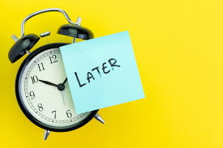
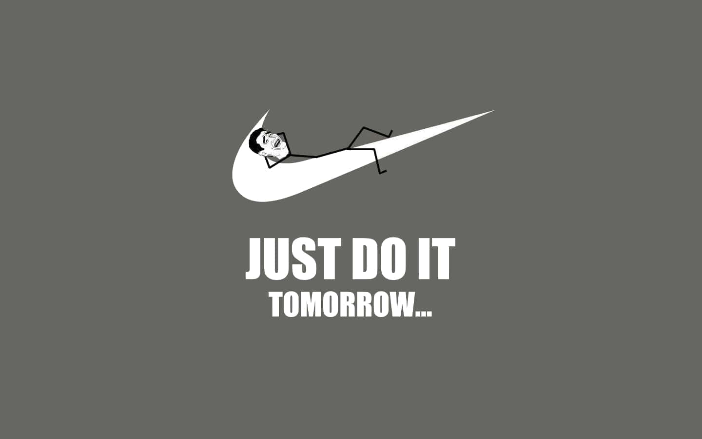

While there are many studies that laud the benefits of effective time management, there have been very few that
have explored the benefits of procrastination. A man by the name of Adam Grant explored the
pros of procrastination in a New York Times article
"Why I Taught Myself to Procrastinate".
Listed benefits included increased creativity and a better memory for unfinished tasks.
Steve Jobs, Bill Clinton, Frank Lloyd Wright and others are listed as prominent procrastinators.
However, while I'm sure the creative benefits are real, I don't think that study really hits the nail on the head,
as it focuses on how procrastination can boost productivity.
While Adam Grant seems to be a very capable and intelligent individual, I don't think he fully understands procrastination.
In fact, in the article he even describes himself as someone who used to be a pre-crastinator. As such,
I fear he may be missing the point entirely.
The purpose of this article to to explain the deeper purpose of an often-misconstrued art - the art of procrastination.

Here I will list the benefits of true, significant procrastination:
- Increased stress. Benefits include
- An increased risk of heart disease
- Weakened immunity
- Sleep disturbance
- Distractedness
- When many tasks are left undone, it can become difficult to finish anything
- Thus, the act of procrastinating can fuel the perceived need to procrastinate further
- This, of course, can trigger a virtuous cycle where you reap the benefits of procrastination
in progressively greater abundance
The following displays the relationship of some very important data

There are some who are even more devoted to the cause of procrastination.
These individuals simply don't try. This YouTube video explains this school of thought in detail: